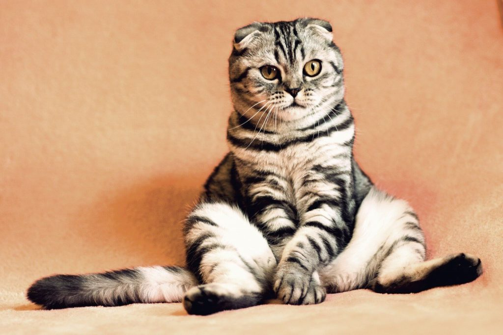
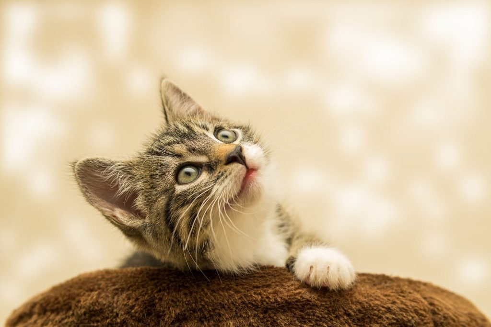
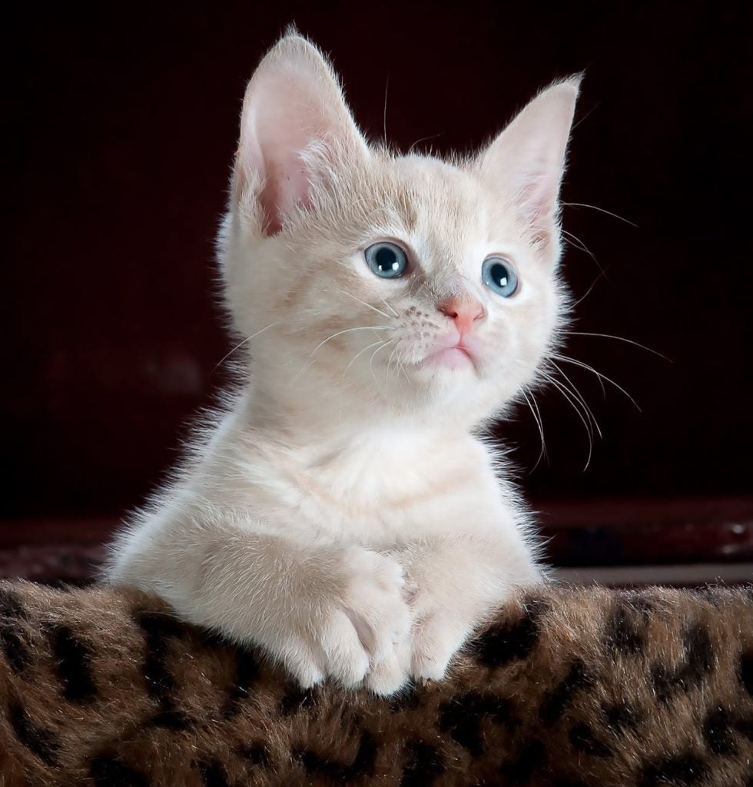

ကြောင်လေးတွေ ချစ်စရာ ကောင်းတယ်မဟုတ်လား။ အထူးသဖြင့် သူတို့ လက် (ခြေ) ချောင်း လေးတွေနဲ့ ဟိုပုတ်ဒီပုတ် ကစားရင် ပိုတောင် ချစ်စရာ ကောင်းသေး။ ဒါပေမယ့် ကြောင်လေးတွေမှာ သူတို့ အသုံးများတဲ့ လက် ရှိပါတယ်တဲ့။ တနည်းအားဖြင့်တော့ ကြောင်တွေဟာ ဘယ်သန်၊ ညာသန် ရှိပါတယ်တဲ့။
သိပ္ပံ ပညာရှင်များဟာ ဒီအချက်ကို တွေ့ရှိခဲ့တာ သိပ်မကြာလှ သေးပါဘူး။ ကြောင်လေးတွေရဲ့ အမူအကျင့်ကို စောင့်ကြည့်ရင်း အမှတ်မထင် တွေ့ရှိခဲ့ တာပါ။

ဒါဟာ လူတွေမှာ တွေ့ရတဲ့ တွေ့ရှိချက် တွေနဲ့ အတော် တူပါတယ်။ လူတွေမှာ အမျိုးသားတွေမှာ အမျိုး သမီးတွေထက် ဘယ်သန် ပိုတွေ့ရတတ် လို့ပါ။ ဒါဟာ လိင်ပိုင်းဆိုင်ရာ ဟိုမုန်းဓါတ်တွေ မတူညီလို့ လို့ ပညာရှင်တွေက ယူဆပါတယ်။
ကြောင်တွေမှ ဘယ်သန်၊ ညာသန် ရှိတာ မဟုတ်ပါဘူး။ အခြား တိရိစ္ဆာန် တွေမှာလဲ ဘယ်သန်၊ ညာသန် ရှိပါတယ်တဲ့။ မျောက်တွေ၊ သားပိုက်ကောင်၊ ဝေလငါးတွေနဲ့ အခြား တိရိစ္ဆာန် တွေဟာလဲ ဘယ်သန် ဒါမှမဟုတ် ညာသန် ရှိတတ်ပါတယ်။

အဓိက အမူအကျင် ၃ ခုကို စောင့်ကြည့် ခဲ့ပါတယ်။ လှေကား ဆင်းတဲ့အခါ ဘယ်ဖက်ခြေထောက်နဲ့ အရင် စဆင်းလဲ၊ နောက်ဖေးသွားဖို့ ပုံးထဲဝင်ရင် ဘယ်ဖက်ခြေထောက်နဲ့ စဝင်လဲ ဆိုတာနဲ့ အိပ်ရင် ဘယ်ဖက်ကို လှဲအိပ်လဲ ဆိုတာတွေကို သတိထား စောင့်ကြည့် ခဲ့ပါတယ်။

ဒါဆို သင့်ကြောင်ကရော ဘယ်သန်လား၊ ညာသန်လား။ သိချင်ရင် မှတ်စုစာအုပ် တစ်အုပ်မှာ အပေါ်က ပြောတဲ့ အမူအကျင့်တွေမှာ ဘယ်ဖက် လက်ကို ပိုသုံးလဲ နေ့စဉ် မှတ်ထားပါတဲ့။ တစ်လလောက်ဆို သင့်ကြောင် ဘယ်သန်လား၊ ညာသန်လား ပြောနိုင်ပါ လိမ့်မယ်တဲ့။ ဒါပေမယ် ကြောင်တွေရဲ့ လေးပုံ တစ်ပုံ လောက်ကတော ဘယ်ရော၊ညာရော အသုံးပြနိုင် ကြပါတယ်တဲ့။